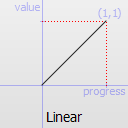
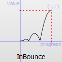

QEasingCurve¶
Note
This class was introduced in Qt 4.6.
Synopsis¶
Functions¶
- def
__eq__(other) - def
__ne__(other) - def
addCubicBezierSegment(c1, c2, endPoint) - def
addTCBSegment(nextPoint, t, c, b) - def
amplitude() - def
customType() - def
overshoot() - def
period() - def
setAmplitude(amplitude) - def
setCustomType(arg__1) - def
setOvershoot(overshoot) - def
setPeriod(period) - def
setType(type) - def
swap(other) - def
toCubicSpline() - def
type() - def
valueForProgress(progress)
Detailed Description¶
The
PySide2.QtCore.QEasingCurveclass provides easing curves for controlling animation.Easing curves describe a function that controls how the speed of the interpolation between 0 and 1 should be. Easing curves allow transitions from one value to another to appear more natural than a simple constant speed would allow. The
PySide2.QtCore.QEasingCurveclass is usually used in conjunction with thePySide2.QtCore.QVariantAnimationandPySide2.QtCore.QPropertyAnimationclasses but can be used on its own. It is usually used to accelerate the interpolation from zero velocity (ease in) or decelerate to zero velocity (ease out). Ease in and ease out can also be combined in the same easing curve.To calculate the speed of the interpolation, the easing curve provides the function
PySide2.QtCore.QEasingCurve.valueForProgress(), where theprogressargument specifies the progress of the interpolation: 0 is the start value of the interpolation, 1 is the end value of the interpolation. The returned value is the effective progress of the interpolation. If the returned value is the same as the input value for all input values the easing curve is a linear curve. This is the default behaviour.For example,
QEasingCurve easing(QEasingCurve::InOutQuad); for(qreal t = 0.0; t < 1.0; t+=0.1) qWarning() << "Effective progress" << t << " is << easing.valueForProgress(t);will print the effective progress of the interpolation between 0 and 1.
When using a
PySide2.QtCore.QPropertyAnimation, the associated easing curve will be used to control the progress of the interpolation between startValue and endValue:QPropertyAnimation animation; animation.setStartValue(0); animation.setEndValue(1000); animation.setDuration(1000); animation.setEasingCurve(QEasingCurve::InOutQuad);The ability to set an amplitude, overshoot, or period depends on the
PySide2.QtCore.QEasingCurvetype. Amplitude access is available to curves that behave as springs such as elastic and bounce curves. Changing the amplitude changes the height of the curve. Period access is only available to elastic curves and setting a higher period slows the rate of bounce. Only curves that have “boomerang” behaviors such as theInBack,OutBack,InOutBack, andOutInBackhave overshoot settings. These curves will interpolate beyond the end points and return to the end point, acting similar to a boomerang.The Easing Curves Example contains samples of
PySide2.QtCore.QEasingCurvetypes and lets you change the curve settings.
-
class
PySide2.QtCore.QEasingCurve([type=Linear])¶ -
class
PySide2.QtCore.QEasingCurve(other) Parameters: - type –
PySide2.QtCore.QEasingCurve.Type - other –
PySide2.QtCore.QEasingCurve
Constructs an easing curve of the given
type.Construct a copy of
other.- type –
-
PySide2.QtCore.QEasingCurve.Type¶ The type of easing curve.
Constant Description QEasingCurve.Linear Constant Description QEasingCurve.InQuad 
Constant Description QEasingCurve.OutQuad 
Constant Description QEasingCurve.InOutQuad 
Constant Description QEasingCurve.OutInQuad 
Constant Description QEasingCurve.InCubic 
Constant Description QEasingCurve.OutCubic 
Constant Description QEasingCurve.InOutCubic Constant Description QEasingCurve.OutInCubic 
Constant Description QEasingCurve.InQuart 
Constant Description QEasingCurve.OutQuart 
Constant Description QEasingCurve.InOutQuart 
Constant Description QEasingCurve.OutInQuart 
Constant Description QEasingCurve.InQuint 
Constant Description QEasingCurve.OutQuint 
Constant Description QEasingCurve.InOutQuint 
Constant Description QEasingCurve.OutInQuint 
Constant Description QEasingCurve.InSine 
Constant Description QEasingCurve.OutSine 
Constant Description QEasingCurve.InOutSine 
Constant Description QEasingCurve.OutInSine 
Constant Description QEasingCurve.InExpo 
Constant Description QEasingCurve.OutExpo 
Constant Description QEasingCurve.InOutExpo 
Constant Description QEasingCurve.OutInExpo 
Constant Description QEasingCurve.InCirc 
Constant Description QEasingCurve.OutCirc 
Constant Description QEasingCurve.InOutCirc 
Constant Description QEasingCurve.OutInCirc 
Constant Description QEasingCurve.InElastic 
- amplitude**period
Constant Description QEasingCurve.OutElastic 
- amplitude**period
Constant Description QEasingCurve.InOutElastic 
Constant Description QEasingCurve.OutInElastic 
Constant Description QEasingCurve.InBack Constant Description QEasingCurve.OutBack 
Constant Description QEasingCurve.InOutBack 
Constant Description QEasingCurve.OutInBack 
Constant Description QEasingCurve.InBounce Constant Description QEasingCurve.OutBounce 
Constant Description QEasingCurve.InOutBounce 
Constant Description QEasingCurve.OutInBounce 
Constant Description QEasingCurve.BezierSpline Allows defining a custom easing curve using a cubic bezier spline QEasingCurve.TCBSpline Allows defining a custom easing curve using a TCB spline QEasingCurve.Custom This is returned if the user specified a custom curve type with PySide2.QtCore.QEasingCurve.setCustomType(). Note that you cannot callPySide2.QtCore.QEasingCurve.setType()with this value, butPySide2.QtCore.QEasingCurve.type()can return it.
-
PySide2.QtCore.QEasingCurve.addCubicBezierSegment(c1, c2, endPoint)¶ Parameters: - c1 –
PySide2.QtCore.QPointF - c2 –
PySide2.QtCore.QPointF - endPoint –
PySide2.QtCore.QPointF
Adds a segment of a cubic bezier spline to define a custom easing curve. It is only applicable if
PySide2.QtCore.QEasingCurve.type()isQEasingCurve.BezierSpline. Note that the spline implicitly starts at (0.0, 0.0) and has to end at (1.0, 1.0) to be a valid easing curve.c1andc2are the control points used for drawing the curve.endPointis the endpoint of the curve.- c1 –
-
PySide2.QtCore.QEasingCurve.addTCBSegment(nextPoint, t, c, b)¶ Parameters: - nextPoint –
PySide2.QtCore.QPointF - t –
PySide2.QtCore.qreal - c –
PySide2.QtCore.qreal - b –
PySide2.QtCore.qreal
Adds a segment of a TCB bezier spline to define a custom easing curve. It is only applicable if
PySide2.QtCore.QEasingCurve.type()isQEasingCurve.TCBSpline. The spline has to start explitly at (0.0, 0.0) and has to end at (1.0, 1.0) to be a valid easing curve. The tensiontchanges the length of the tangent vector. The continuitycchanges the sharpness in change between the tangents. The biasbchanges the direction of the tangent vector.nextPointis the sample position. All three parameters are valid between -1 and 1 and define the tangent of the control point. If all three parameters are 0 the resulting spline is a Catmull-Rom spline. The begin and endpoint always have a bias of -1 and 1, since the outer tangent is not defined.- nextPoint –
-
PySide2.QtCore.QEasingCurve.amplitude()¶ Return type: PySide2.QtCore.qrealReturns the amplitude. This is not applicable for all curve types. It is only applicable for bounce and elastic curves (curves of
PySide2.QtCore.QEasingCurve.type()QEasingCurve.InBounce,QEasingCurve.OutBounce,QEasingCurve.InOutBounce,QEasingCurve.OutInBounce,QEasingCurve.InElastic,QEasingCurve.OutElastic,QEasingCurve.InOutElasticorQEasingCurve.OutInElastic).
-
PySide2.QtCore.QEasingCurve.customType()¶ Return type: PyObject
-
PySide2.QtCore.QEasingCurve.__ne__(other)¶ Parameters: other – PySide2.QtCore.QEasingCurveReturn type: PySide2.QtCore.boolCompare this easing curve with
otherand returnstrueif they are not equal. It will also compare the properties of a curve.See also
PySide2.QtCore.QEasingCurve.operator==()
-
PySide2.QtCore.QEasingCurve.__eq__(other)¶ Parameters: other – PySide2.QtCore.QEasingCurveReturn type: PySide2.QtCore.boolCompare this easing curve with
otherand returnstrueif they are equal. It will also compare the properties of a curve.
-
PySide2.QtCore.QEasingCurve.overshoot()¶ Return type: PySide2.QtCore.qrealReturns the overshoot. This is not applicable for all curve types. It is only applicable if
PySide2.QtCore.QEasingCurve.type()isQEasingCurve.InBack,QEasingCurve.OutBack,QEasingCurve.InOutBackorQEasingCurve.OutInBack.
-
PySide2.QtCore.QEasingCurve.period()¶ Return type: PySide2.QtCore.qrealReturns the period. This is not applicable for all curve types. It is only applicable if
PySide2.QtCore.QEasingCurve.type()isQEasingCurve.InElastic,QEasingCurve.OutElastic,QEasingCurve.InOutElasticorQEasingCurve.OutInElastic.
-
PySide2.QtCore.QEasingCurve.setAmplitude(amplitude)¶ Parameters: amplitude – PySide2.QtCore.qrealSets the amplitude to
amplitude.This will set the amplitude of the bounce or the amplitude of the elastic “spring” effect. The higher the number, the higher the amplitude.
-
PySide2.QtCore.QEasingCurve.setCustomType(arg__1)¶ Parameters: arg__1 – PyObject
-
PySide2.QtCore.QEasingCurve.setOvershoot(overshoot)¶ Parameters: overshoot – PySide2.QtCore.qrealSets the overshoot to
overshoot.0 produces no overshoot, and the default value of 1.70158 produces an overshoot of 10 percent.
-
PySide2.QtCore.QEasingCurve.setPeriod(period)¶ Parameters: period – PySide2.QtCore.qrealSets the period to
period. Setting a small period value will give a high frequency of the curve. A large period will give it a small frequency.See also
-
PySide2.QtCore.QEasingCurve.setType(type)¶ Parameters: type – PySide2.QtCore.QEasingCurve.TypeSets the type of the easing curve to
type.See also
-
PySide2.QtCore.QEasingCurve.swap(other)¶ Parameters: other – PySide2.QtCore.QEasingCurveSwaps curve
otherwith this curve. This operation is very fast and never fails.
-
PySide2.QtCore.QEasingCurve.toCubicSpline()¶ Return type: Returns the
cubicBezierSpline()that defines a custom easing curve. If the easing curve does not have a custom bezier easing curve the list is empty.
-
PySide2.QtCore.QEasingCurve.type()¶ Return type: PySide2.QtCore.QEasingCurve.TypeReturns the type of the easing curve.
-
PySide2.QtCore.QEasingCurve.valueForProgress(progress)¶ Parameters: progress – PySide2.QtCore.qrealReturn type: PySide2.QtCore.qrealReturn the effective progress for the easing curve at
progress. Whereasprogressmust be between 0 and 1, the returned effective progress can be outside those bounds. For example,QEasingCurve.InBackwill return negative values in the beginning of the function.
© 2018 The Qt Company Ltd. Documentation contributions included herein are the copyrights of their respective owners. The documentation provided herein is licensed under the terms of the GNU Free Documentation License version 1.3 as published by the Free Software Foundation. Qt and respective logos are trademarks of The Qt Company Ltd. in Finland and/or other countries worldwide. All other trademarks are property of their respective owners.